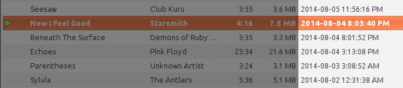

Update Banshee's Date Added Field
August 10, 2014
If you use Banshee as a music player, you've probably noticed that the "Date Added" column isn't very useful. Instead of showing the file creation or last modified time, it actually uses the time the files were added to the library.
There's no built-in way to make it sort by modification time. To make this work, we'll have to mess around with the media database.
Here's a quick Python script that accomplishes the task:
#!/usr/bin/env python
DB_PATH = "~/.config/banshee-1/banshee.db"
import sqlite3
import os.path as path
conn = sqlite3.connect(path.expanduser(DB_PATH))
c = conn.cursor()
c.execute("""UPDATE CoreTracks SET
DateAddedStamp = FileModifiedStamp,
DateUpdatedStamp = FileModifiedStamp""")
conn.commit()
c.close()You can also download the script directly.
This was written for Python 2.7, but should also work for any modern-ish version you have available. Simply run the script once to update the Date Added and Date Modified columns in your Banshee tracks list to the actual file modified time:
To do this regularly, you might want to set up a cronjob or have it done on startup. To have the script run once a day, simply run crontab -e and add 0 0 */1 * * /PATH_TO_PYTHON_SCRIPT/banshee-update-date-added.py. If you do this, make sure that the script is executable first using chmod +x /PATH_TO_PYTHON_SCRIPT/banshee-update-date-added.py.
Oh, and one last thing. If you like keeping your ID3 tags updated in MP3 files, simply enable "Edit > Preferences > Sync metadata between library and files" to apply edits to tracks in Banshee to the actual files.
Edit (August 19, 2014): To do the opposite, updating the file modified timestamp to match Banshee's date added timestamp, here's another Python script to accomplish that. This one's written for Python 3, however.